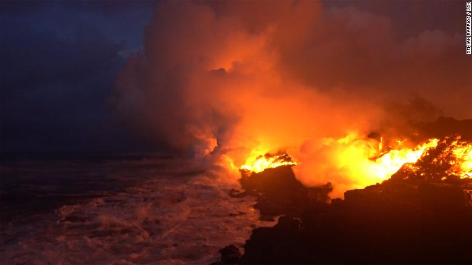

Sixty percent of all active volcanoes occur at the boundaries between tectonic plates. Most volcanoes are found along a belt, called the “Ring of Fire” that encircles the Pacific Ocean. This is a volcano on the coast of Hawaii.
There are many volcanoes within the ocean as well. There is an estimate of 4,000 volcanoes per 386,102 square miles on the floor of the Pacific Ocean. Perhaps as many as 75,000 of these volcanoes rise over half a mile above the ocean floor.